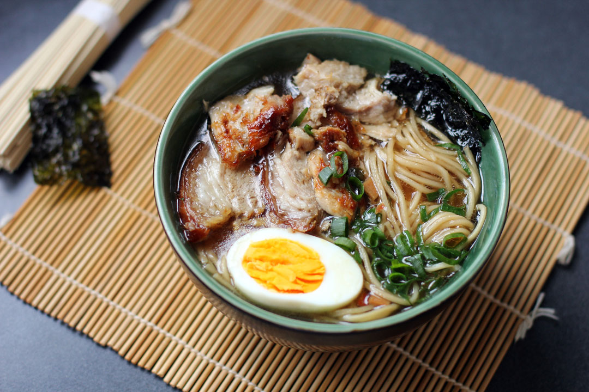

Home
Ramen Noodles

Description
A nice bowl of vegetarian ramen noodles with a soft-boiled egg, spring onion, and more!
Ingredients
- 6 cloves garlic, finely chopped or grated
- 2 medium shallots, finely chopped
- 1 inch fresh ginger, thinly sliced
- 1 teaspoon red pepper flakes
- 1 L vegetable broth
- 400 mL coconut milk
- 1 tablespoon miso paste
- 1 tablespoon Gochujang
- 2 squares ramen noodles
- 200 g spinach
- 1 tablespoon sesame oil
- 2 soft boiled eggs
- Bok choy
- Vegetarian crispy chicken schnitzel
Steps
- In a Dutch oven, cook the garlic, shallots, ginger, and red pepper flakes for a few minutes
- Throw in the vegetable broth and bring to a boil
- In the mean time, boil the eggs for about 7,5 minutes